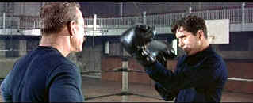

|
Long Gray Line/ B,B- |
|
Columbia/1954/137/ANA
2.55/PS 1.33 |
The Long Gray Line is John Ford's double-dose
of Irish blarney set at West Point. The story of West Point Army lifer's
more than fifty years Marty Maher, John the widescreen biopic captures
the importance of United States Military Academy and its significance in our
history.
 |
| Boxing
lessons. ©Columbia |
Tyrone Power's central performance as Maher is
consistently charming. He invests the young Maher who arrives at the
Point fresh off the boat from Ireland with energy. The old Maher, bent by
time, is still full of life and Power provides him with an extra dose of
savvy. It's a well rounded performance. Power's performance is full of
posturing, alternating bellicosity with charm and his delivery is
consistently winning. In support of Power, Maureen O'Hara plays Maher's fair
colleen and wife Mary O'Donnell. with typical red-haired spirit. Ford
regular Ward Bond is the tough Captain Koehler, Master of the Sword at the
Point. Donald Crisp, memorable in Ford's How Green Was My Valley,
exercises a bit of the blarney as Maher's father.
Early sections are brimming with broad slapstick humor,
but slowly but surely it disappears into rather straight sentimental drama.
Ford knows how to pour on the sentiment and charge up the emotional pull.
The scenes dealing with losses during World War I are very moving. The coin
built up from free-spirited earlier filmmaking keeps the sentiment from
overflowing with sticky embarrassment.
The Ford static compositions where players move through
the scenes lends a sense of reality to the filmmaking. You don't see a
million cuts and close-ups and reaction shots. Ford's master shots are
simply masterful. If you enjoy the military music, its serve up with
generous muster. I found it sort of rousing, especially in these
contemporary patriotic times.
Color is good though slightly faded. Excess grain
crops up regularly especially in some of the longer shots. There are plenty
of specs of dirt in the transfer, but it's never obviously softened by
digital cleaning. There are a few full length scratches for short duration.
Flesh tones are slights pasty and variations are somewhat limited. Good
black level and accurate shadow detail. The 3 channel surround sound is
clear and the big military music sounds fine.
Reviewed on a Sharp 9000VX DLP Projector
|
|
|
|
Hitchcock on DVD

Information and review links to Alfred Hitchcock on DVD

 Have you visited
Home Theater Talk lately? One of
the friendliest places on the Net for Home Theater and DVD discussion, you
can get help for installation problems or simply share your opinions with
other Vidiots. Have you visited
Home Theater Talk lately? One of
the friendliest places on the Net for Home Theater and DVD discussion, you
can get help for installation problems or simply share your opinions with
other Vidiots.

Excellent resource with DVD reviews, forum
and more. Home of the DVD Savant.

DVD Price Search
Allows you to create a "Comparison
Cart" filled with the DVD titles that you are interested in buying.

Mystery writer Fred Hunter digs into classic
films on DVD. Check out his insightful reviews at
The Classics on DVD.

List Your DVD
Reader DVD Reviews and base DVD information. You can also submit a list
of your favorite DVDs.
MRQE
Find reams of movie and DVD
reviews at the Movie Review Query Engine, a index of reviews appearing on
the Internet.

|